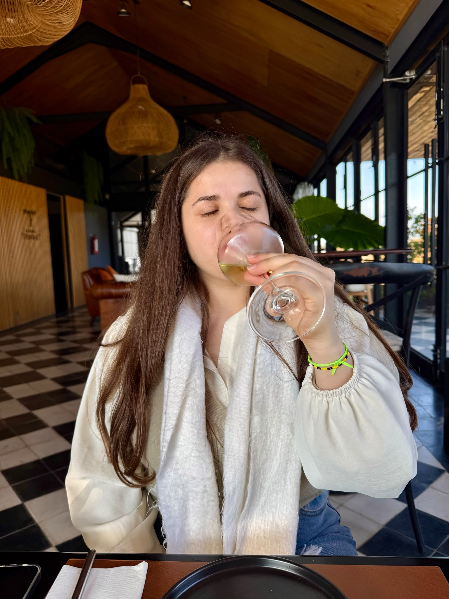
Sabores
Degustaciones
Bodegas, mesas locales y productos elegidos para conocer la zona desde el paladar.
Sobre la experiencia
Creamos salidas donde la ruta, la mesa y el paisaje se encuentran: bodegas, pueblos con encanto, sabores locales, charlas compartidas y momentos para volver con historias.
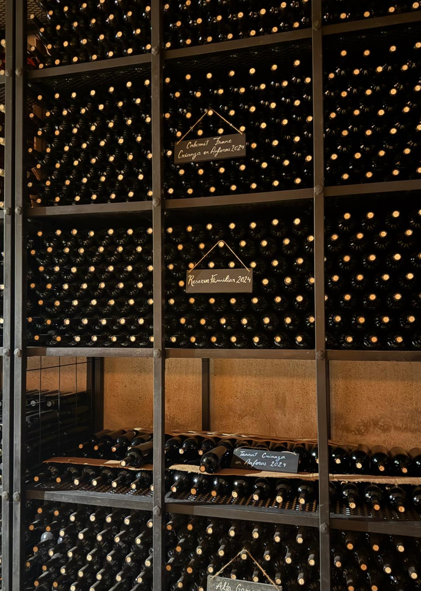
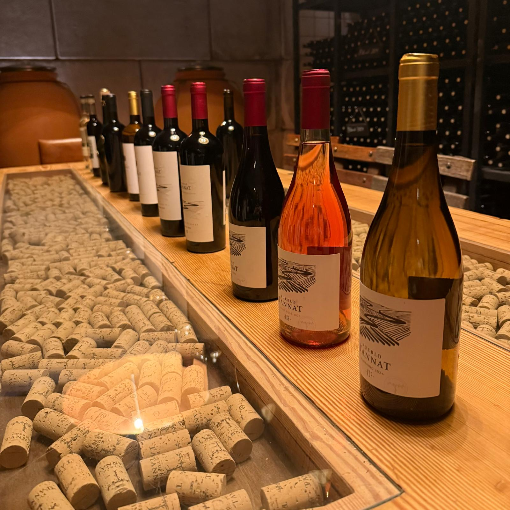
Qué ofrecemos

Bodegas, mesas locales y productos elegidos para conocer la zona desde el paladar.
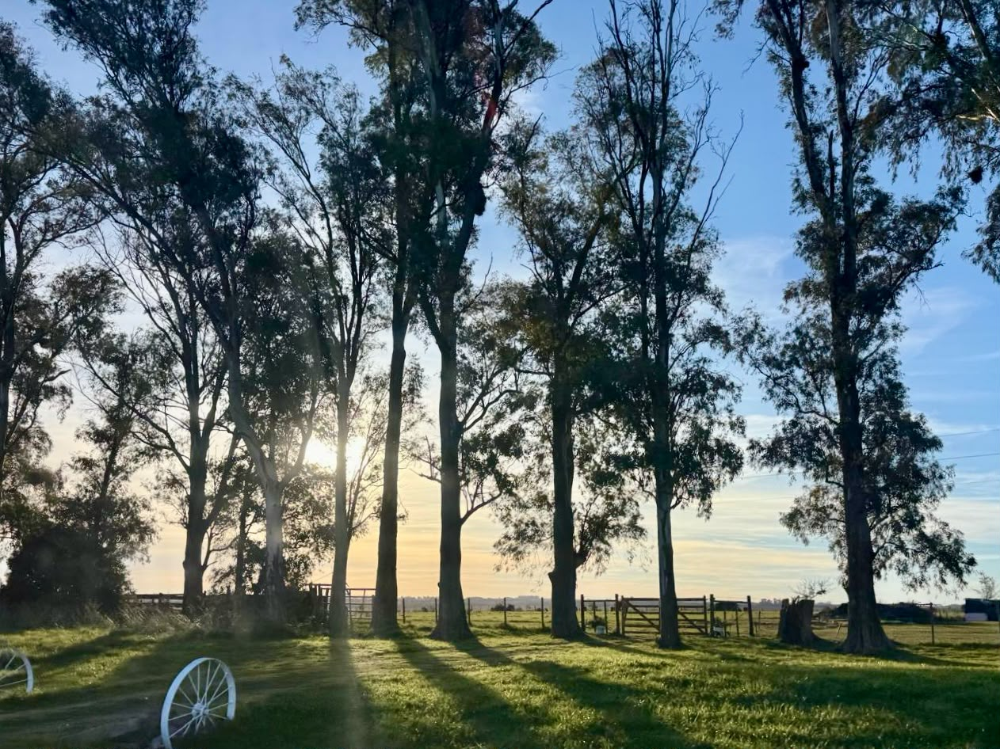
Recorridos con paradas lindas, vistas memorables y tiempo real para disfrutar.
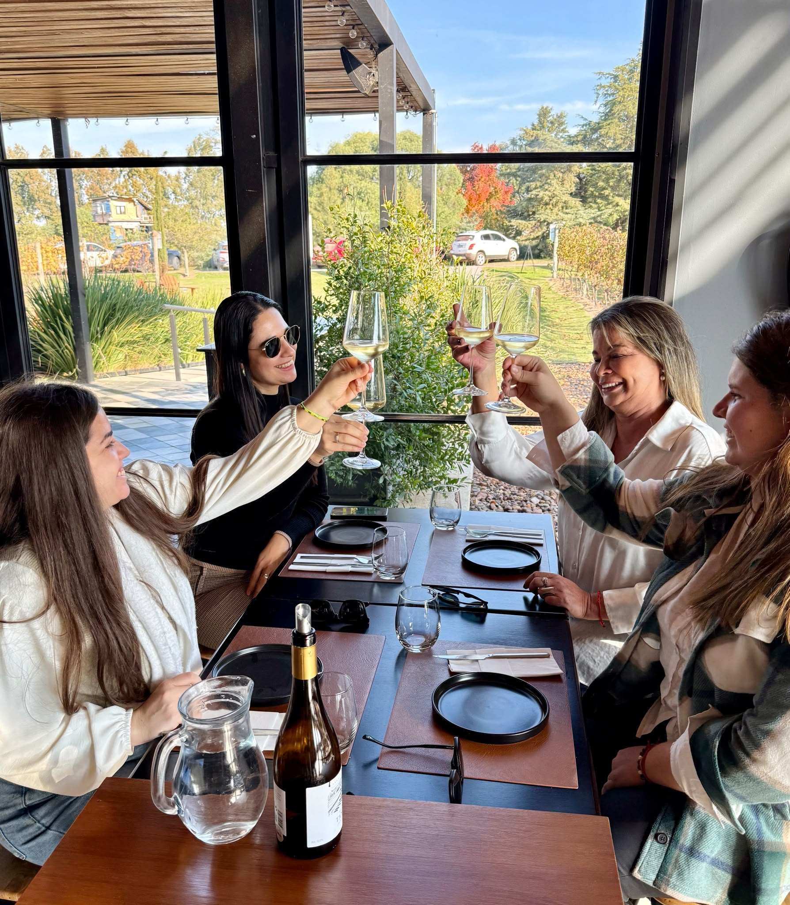
Viajes cálidos, cercanos y bien organizados para compartir sin preocuparse por nada.
Experiencia real
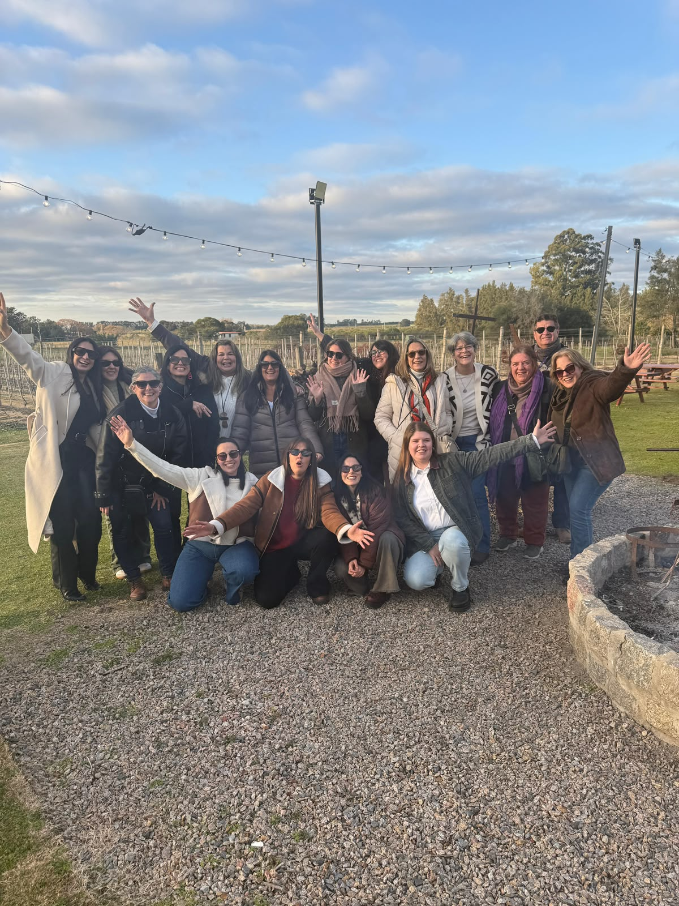
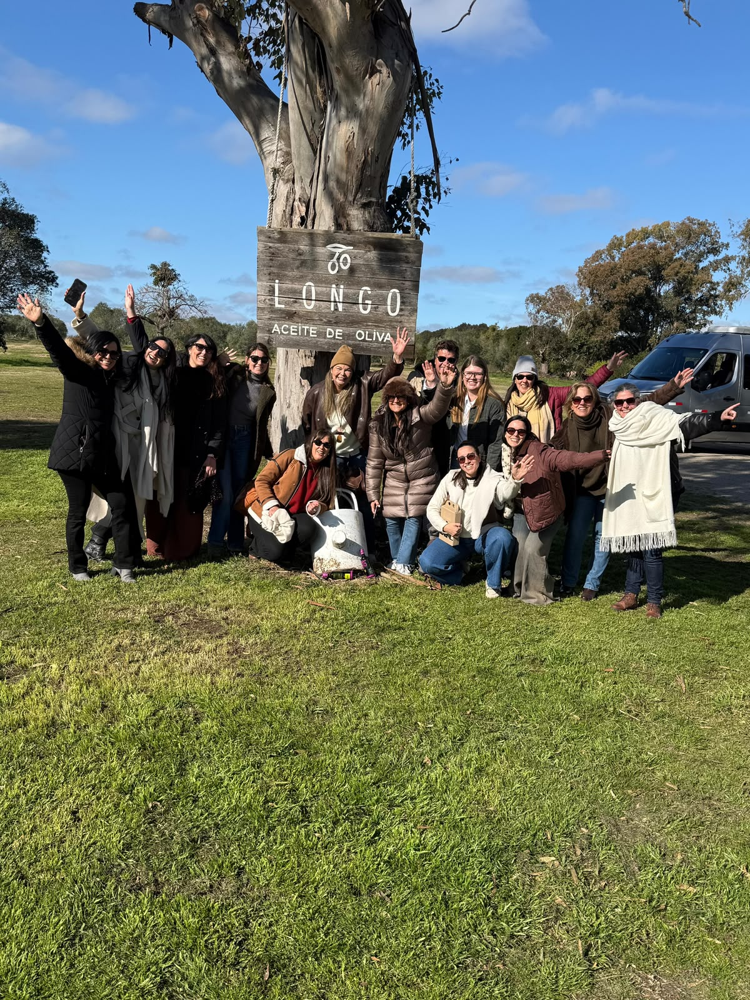
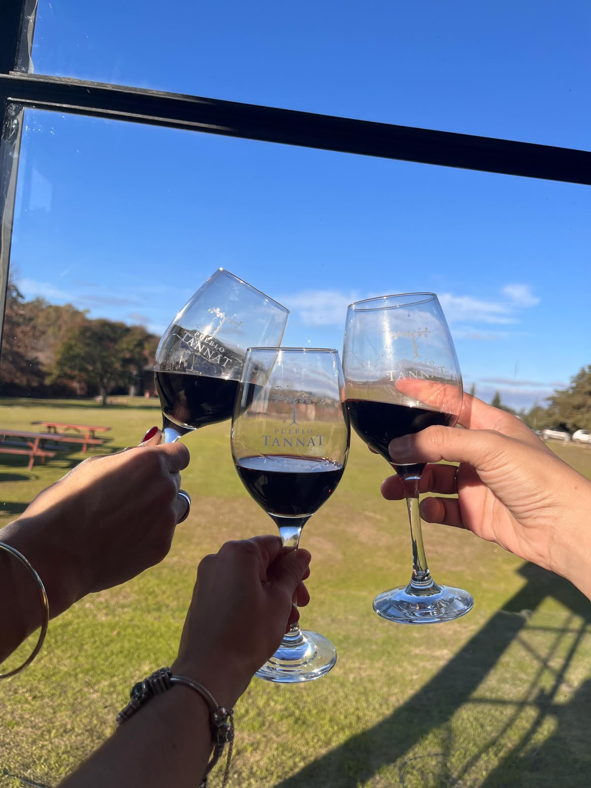
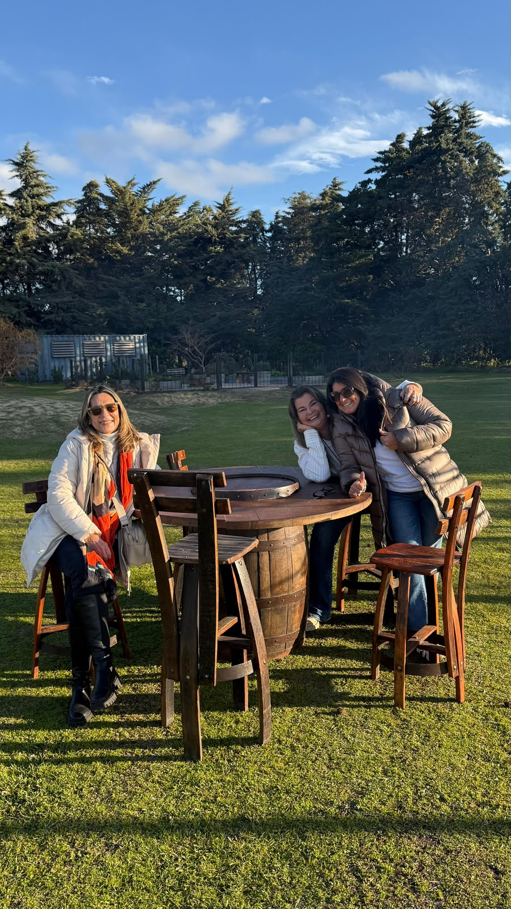
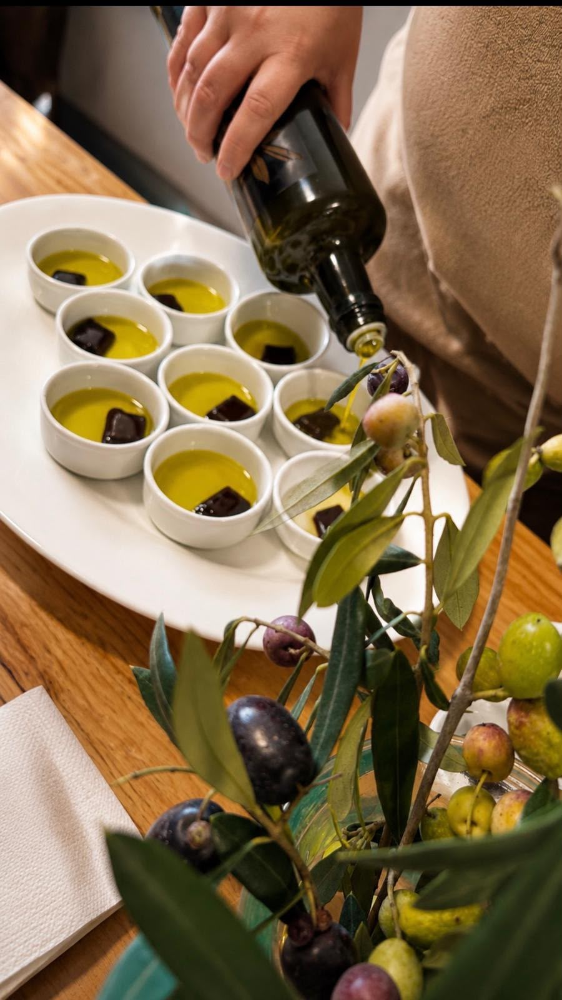
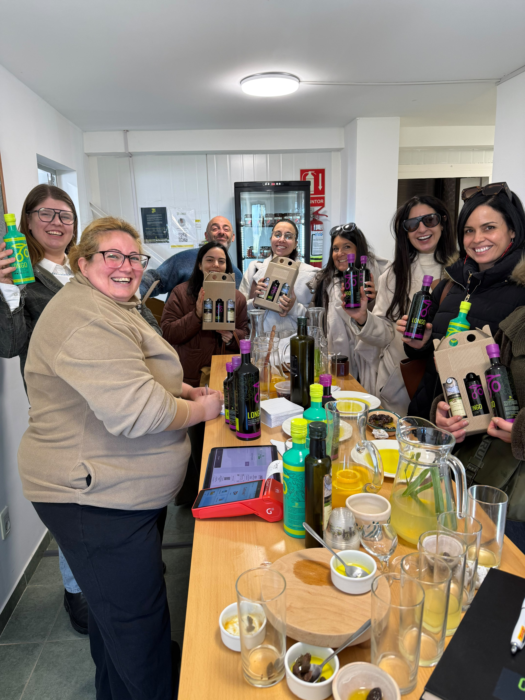
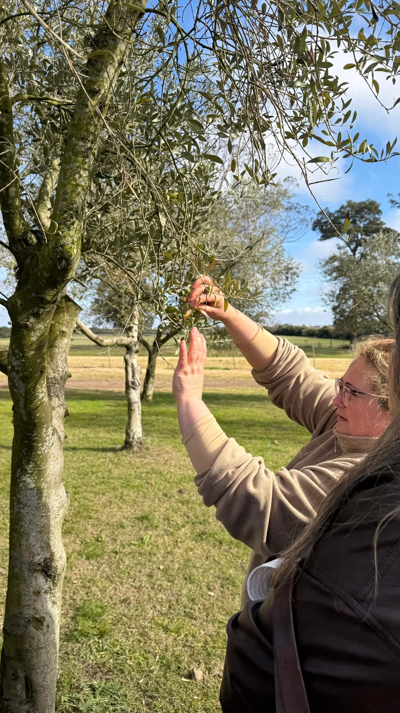
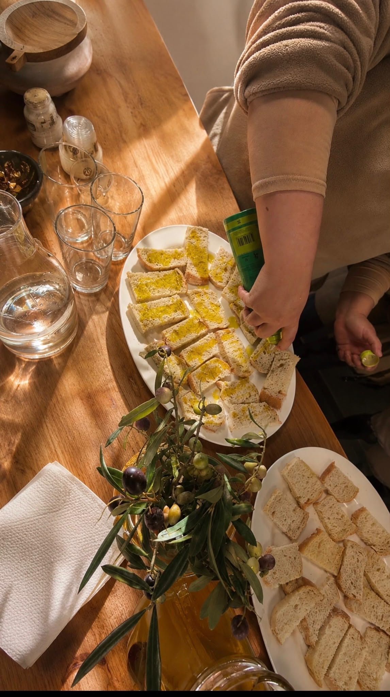
Próxima salida
Una escapada para caminar entre viñedos, descubrir paisajes únicos y cerrar el día con sabores que quedan en la memoria.
Momentos
La experiencia completa vive en un solo carrusel: fotos reales, clips verticales y escenas que muestran el ritmo de la visita.
Contacto
El perfil de Instagram puede ser el punto principal para recibir mensajes, mostrar próximas salidas y convertir seguidores en viajeros.